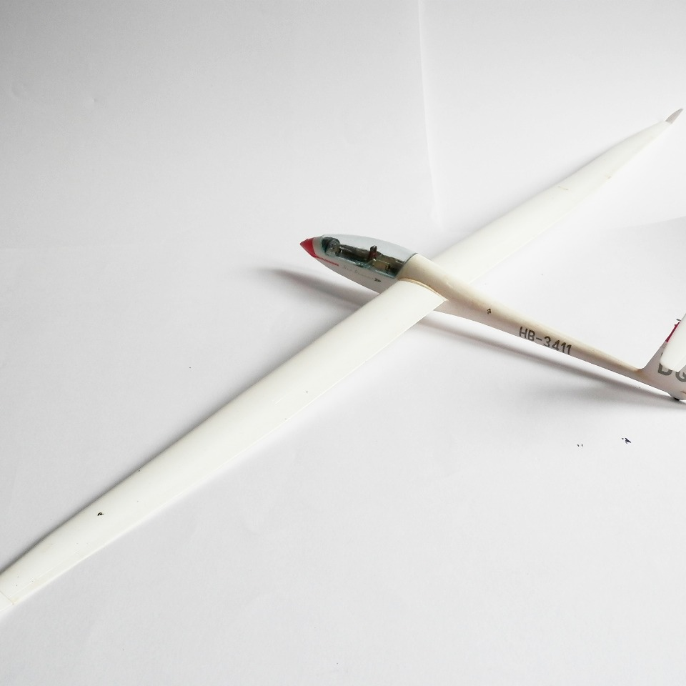

Aerei · scale model archive
Schempp-Hirth Duo Discus
Schempp-Hirth Duo Discus — Kit: Revell, Scale: 1/32. Segelfluggruppe Bern. Unusual kit of impressive size in this scale (62cm model wingspan) of the high…

Photo gallery
English description
Segelfluggruppe Bern. Unusual kit of impressive size in this scale (62cm model wingspan) of the high performance glider
Descrizione italiana
Segelfluggruppe Bern. Kit insolito e di dimensioni notevoli in questa scala, con un’apertura alare del modello di 62 cm, dedicato a un aliante ad alte prestazioni.